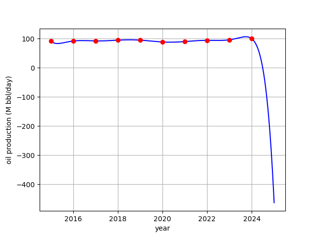

\( P_4(x)= 1.433329+(x-0.6)(1.989870+(x-0.7)(3.258900 +(x-0.8)(3.680667 +(x-0.9)4.000417))). \)
1 (b) Substitute into \(P_4(x)\) to get \(P_4(0.82)=1.958910\) and \(P_4(0.98) = 2.612848\).
1 (c) According to Theorem 3.3, the interpolation error satisfies \[|e^{x^2}-P_4(x)| = \frac{|(x-0.6)(x-0.7)(x-0.8)(x-0.9)(x-1)|}{5!}|f^{(v)}(c)| \] where \[f^{(v)}(x) = (32x^5+160x^3+120x)e^{x^2}.\] For \(c\leq 1\), an upper bound for \(f^{(v)}(c)\) is \[|f^{(v)}(c)|\leq (32+160+120)e^1 = 312e\approx 848.1.\] Substituting into the error formula gives the error bounds \[|e^{(0.82)^2}-P_4(0.82)|\leq 0.0000537\] and \[|e^{(0.98)^2}-P_4(0.98)|\leq 0.000217.\] The actual errors, using the results of part (b), are \[|e^{(0.82)^2}-P_4(0.82)|\approx 0.0000234\] and \[|e^{(0.98)^2}-P_4(0.98)|\approx 0.000107.\]
1 (d) The actual interpolation error is plotted below for the intervals \([0.5, 1]\) (left) and \([0,2]\) (right).

Substituting \(x=2010\) gives \(P_9(2010)\approx -1.952\times 10^{12}\) barrels, which is mathematically correct but nonsensical, and not consistent with the data shown. This is a typical example of the Runge phenomenon, which prevents the degree-9 interpolating polynomial from being a usable model for extrapolating this data.